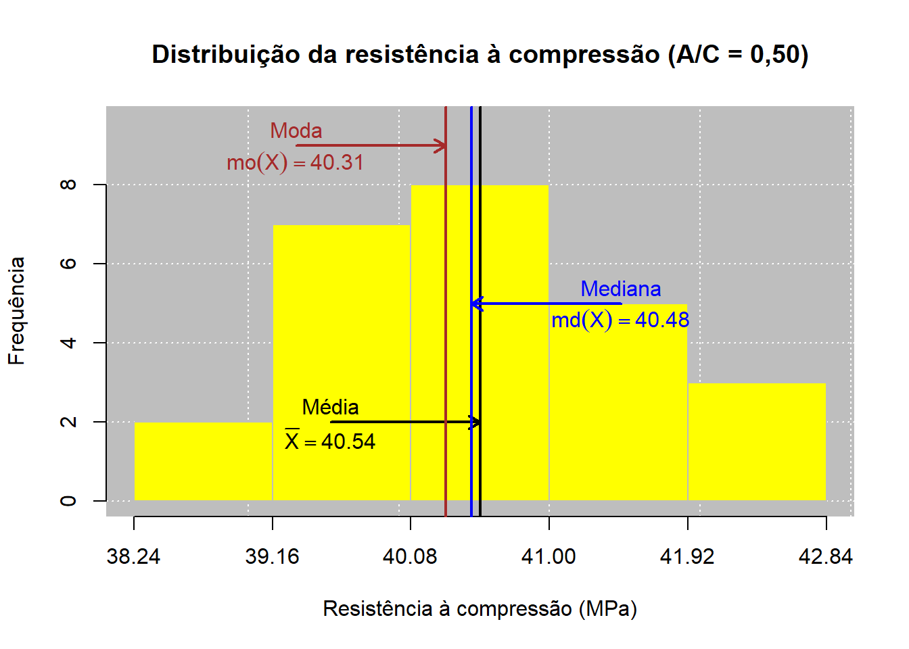
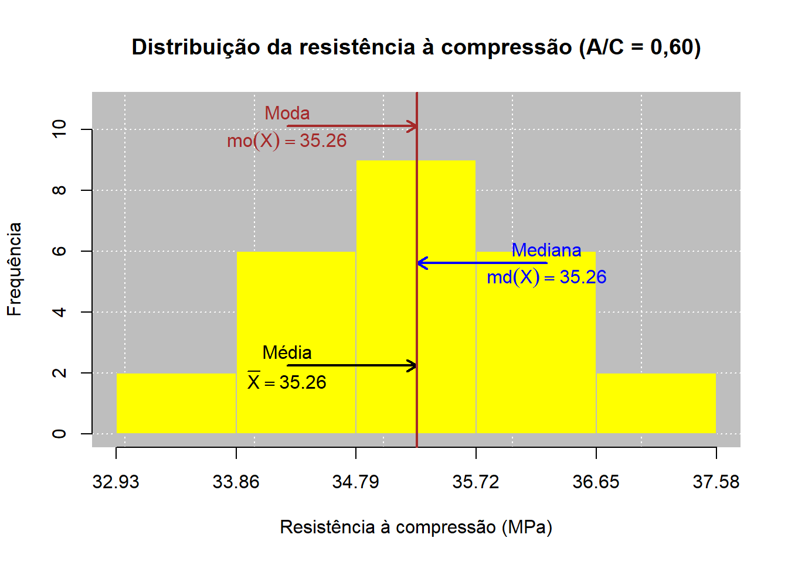
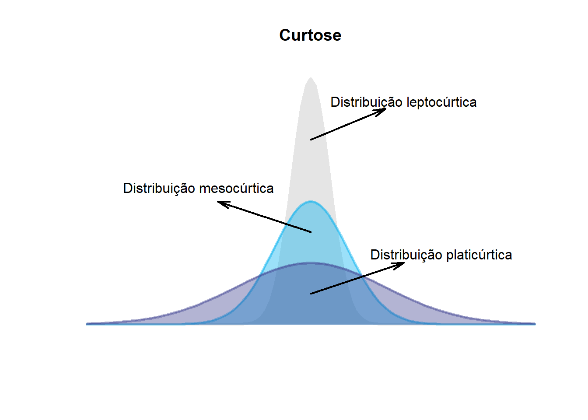

| Corpo de Prova | A/C = 0,50 (MPa) | A/C = 0,60 (MPa) | A/C = 0,70 (MPa) |
|---|---|---|---|
| 1 | 40.6 | 34.8 | 29.8 |
| 2 | 41.9 | 36.2 | 31.2 |
| 3 | 40.4 | 35.4 | 30.4 |
| 4 | 40.0 | 34.5 | 29.5 |
| 5 | 39.2 | 33.9 | 28.9 |
| 6 | 42.1 | 36.8 | 31.8 |
| 7 | 39.8 | 35.1 | 30.1 |
| 8 | 40.7 | 34.7 | 29.7 |
| 9 | 41.3 | 36.0 | 31.0 |
| 10 | 38.9 | 33.6 | 28.6 |
| 11 | 40.2 | 35.3 | 30.3 |
| 12 | 39.5 | 34.2 | 29.2 |
| 13 | 41.0 | 36.4 | 31.4 |
| 14 | 40.8 | 35.7 | 30.7 |
| 15 | 39.7 | 34.9 | 29.9 |
| 16 | 42.4 | 37.1 | 32.1 |
| 17 | 40.1 | 35.0 | 30.0 |
| 18 | 39.3 | 34.0 | 29.0 |
| 19 | 41.5 | 36.3 | 31.3 |
| 20 | 40.5 | 35.5 | 30.5 |
| 21 | 38.7 | 33.4 | 28.4 |
| 22 | 39.9 | 34.6 | 29.6 |
| 23 | 41.2 | 36.1 | 31.1 |
| 24 | 40.3 | 35.2 | 30.2 |
| 25 | 42.0 | 36.6 | 31.6 |


Relatório de Aula Prática 01
Estatística e Probabilidade
Prof. Ben Dêivide (DEFIM/CAP/UFSJ)
1 📌 Introdução
A análise estatística constitui uma importante ferramenta para a compreensão, organização e interpretação de dados no campo da Engenharia Civil, especialmente em situações que envolvem ensaios experimentais, levantamentos técnicos, controle de qualidade e avaliação do comportamento de materiais e sistemas construtivos. Nesse contexto, o uso de recursos computacionais permite tornar os procedimentos estatísticos mais eficientes, precisos e reprodutíveis, favorecendo uma análise fundamentada dos resultados obtidos.
Entre as ferramentas disponíveis, o ambiente R destaca-se por oferecer recursos para manipulação, tratamento, representação gráfica e análise de dados, possibilitando a aplicação prática de diferentes conceitos estatísticos. Aliado ao pacote leem, o R permite explorar conjuntos de dados de maneira sistemática, desde sua organização e tabulação até o cálculo e a interpretação de medidas estatísticas. Entretanto, a utilização dessas ferramentas não deve se limitar à obtenção automática de resultados, sendo fundamental compreender os conceitos e procedimentos que fundamentam cada análise realizada.
Nesse sentido, a estatística descritiva apresenta-se como uma etapa essencial para a caracterização de um conjunto de dados. Medidas de posição e dispersão permitem sintetizar as principais características das observações, enquanto os coeficientes de assimetria e curtose fornecem informações adicionais sobre a forma e o comportamento da distribuição. A utilização de tabelas e representações gráficas complementa essa análise, permitindo identificar tendências, padrões, variabilidade e possíveis valores discrepantes.
Assim, esta prática propõe a integração entre os fundamentos da linguagem R, os conhecimentos de estatística descritiva e sua aplicação a dados relacionados à Engenharia Civil. A partir de um banco de dados de natureza experimental ou técnico-engenheirística, serão empregados os recursos do ambiente R e do pacote leem para organizar, representar e analisar as informações, buscando não apenas executar os procedimentos estatísticos, mas também compreender seus fundamentos e interpretar criticamente os resultados no contexto da Engenharia Civil.
2 🎯 Objetivos
2.1 Objetivo geral
Utilizar o ambiente R e o pacote leem como ferramentas de apoio à análise estatística de dados aplicados à Engenharia Civil, desenvolvendo a capacidade de organizar, representar, analisar e interpretar resultados por meio de técnicas de estatística descritiva.
2.2 Objetivos específicos
Compreender os principais fundamentos do ambiente R e da linguagem utilizada para manipulação e análise de dados, com base em Batista e Oliveira (2022) e Batista (2024a);
Revisar conceitos fundamentais de estatística descritiva;
Aprofundar o estudo das medidas de assimetria e curtose;
Organizar e tabular um conjunto de dados quantitativos;
Aplicar o pacote leem na análise estatística;
Construir e interpretar tabelas e representações gráficas;
Determinar medidas de posição e dispersão;
Analisar a variabilidade e a distribuição dos dados;
Relacionar os resultados estatísticos ao contexto da Engenharia Civil;
Desenvolver uma interpretação crítica dos resultados obtidos.
3 📚 Fundamentação Teórica
3.1 Introdução ao ambiente R
3.1.1 O que é o R?
O R é um ambiente de software livre e de código aberto voltado para manipulação de dados, cálculo estatístico e geração de gráficos. Por isso, é comum ouvir duas formas de tratamento: “o R”, quando se fala do programa/sistema como um todo, e “a linguagem R”, quando se fala especificamente da sintaxe usada para escrever os comandos. Diferente de programas estatísticos comerciais fechados, o R permite que o próprio usuário crie novas funções e as compartilhe livremente com a comunidade por meio de pacotes.
Já o RStudio é a interface (IDE - Integrated Development Environment) mais usada para trabalhar com o R. Ele não substitui o R, apenas facilita seu uso por meio de janelas, botões e atalhos: sem o R instalado, o RStudio não funciona. A tela do RStudio é dividida em quatro áreas principais: o editor de scripts (onde o código é escrito), o console (onde o código é executado), o painel de ambiente/histórico (onde aparecem os objetos criados) e o painel de arquivos/gráficos/pacotes/ajuda.
3.1.2 Princípios do R
Toda a lógica interna do R pode ser resumida em três ideias simples, propostas por John Chambers, criador da linguagem S (base histórica do R):
- Tudo que existe no R é um objeto: números, textos, tabelas, gráficos e até as próprias funções são objetos guardados na memória do computador.
- Tudo que acontece no R é uma chamada de função: até uma simples soma como
10 + 15é, por trás dos panos, uma função sendo executada. - Interfaces com outros programas fazem parte do R: o R se comunica nativamente com linguagens como C, C++, Python e com tecnologias web (HTML, JavaScript), estendendo seu uso muito além da estatística básica.
3.1.3 Interface
O RStudio apresenta sua interface organizada em quatro quadrantes principais, cada um destinado a uma função específica durante o desenvolvimento das análises:
- 1º Quadrante – Editor de Scripts: espaço destinado à criação, edição e armazenamento dos códigos desenvolvidos em R, normalmente salvos em arquivos com extensão .R. Permite organizar os comandos de forma estruturada e reutilizá-los posteriormente.
- 2º Quadrante – Console: ambiente no qual os comandos são executados efetivamente, apresentando os resultados diretamente ao usuário. Também é possível inserir comandos manualmente, embora eles não sejam automaticamente organizados no script.
- 3º Quadrante – Ambiente e Histórico: apresenta os objetos criados durante a sessão, como variáveis, vetores, tabelas, conjuntos de dados e funções. Também possibilita consultar o histórico dos comandos executados e acompanhar os elementos armazenados no ambiente de trabalho.
- 4º Quadrante – Área de Visualização e Apoio: destinado principalmente à exibição dos gráficos e resultados visuais produzidos pelas análises. Essa área também permite acessar arquivos e diretórios, gerenciar pacotes instalados e consultar a documentação e os recursos de ajuda disponíveis no R.
3.1.4 Sintaxe e Semântica
A linguagem R, assim como outras linguagens de programação, apresenta regras de sintaxe e semântica, que orientam a forma como os comandos devem ser escritos e interpretados pelo sistema.
Sintaxe é o conjunto de regras que definem como o código deve ser escrito;
Semântica é o significado por trás de cada comando, ou seja, o que ele realmente faz quando executado. Entender essa diferença evita a maioria dos erros cometidos por quem está começando.
Assim, compreender os conceitos de sintaxe e semântica é fundamental para utilizar o R de maneira adequada. Enquanto a sintaxe está relacionada à forma correta de escrever e estruturar os comandos, a semântica está associada à interpretação e ao significado das operações realizadas. O domínio desses conceitos contribui para a correta aplicação dos procedimentos estatísticos abordados no estudo, incluindo a organização e análise dos dados, as medidas de posição e dispersão, além dos coeficientes de assimetria e curtose.
3.2 Estatística Descritiva
3.2.1 Definições gerais
Batista (2024b) destaca a Estatística como uma área fundamental para a coleta, organização, análise e interpretação de dados. Seu objetivo é transformar informações em resultados que contribuam para a compreensão de diferentes situações e para a tomada de decisões. Nesse contexto, a Estatística Descritiva desempenha um papel essencial ao organizar, sintetizar e apresentar os dados por meio de tabelas, gráficos e medidas estatísticas, facilitando sua interpretação e análise.
População (\(N\)) e Amostra (\(n\))
- População: conjunto finito ou infinito de todos os elementos que compartilham pelo menos uma característica de interesse; tamanho denotado por \(N\). É finita se pode ser totalmente enumerada, infinita caso contrário.
- Amostra: subconjunto representativo extraído da população, tamanho \(n\). É sempre finita, pois todos os seus elementos precisam ser efetivamente examinados. Quando se tem acesso a todos os elementos da população, faz-se um censo, o que elimina a necessidade de inferência estatística.
Variáveis
As variáveis podem ser qualitativas, quando representam características ou categorias, ou quantitativas, quando são expressas por números. As variáveis quantitativas podem ser discretas ou contínuas.
Discreta: resulta de contagem, sem valores intermediários possíveis (ex.: número de erros);
Contínua: resulta de mensuração, pode assumir qualquer valor real num intervalo (ex.: resistência à tração).
Somatórios: representados pelo símbolo \(Σ\), utilizados para facilitar a escrita e a realização de cálculos que envolvem vários valores.
\[\sum_{i=1}^{m} X_i = X_1 + X_2 + \dots + X_m\]
\(i\) é o índice de posição (começa em 1),
\(m\) é o limite superior (pode ser \(n\) ou \(N\)),
\(X_i\) é o valor da observação \(i\).
3.2.2 Coleta, organização e apresentação dos dados
Dados coletados sem ordenação são dados brutos. A partir deles, é possível realizar uma ordenação, obtendo os dados em rol, e posteriormente construir tabelas de distribuição de frequências e representações gráficas. A tabulação e a representação gráfica permitem sintetizar grandes conjuntos de observações, facilitando a identificação de padrões, concentrações, diferenças, valores extremos e características da distribuição dos dados. Os dados coletados podem ser organizados em ordem crescente ou decrescente, formando um rol, o que facilita a identificação dos valores e a análise do conjunto (Batista, 2024b).
As tabelas de distribuição de frequência são utilizadas para organizar a quantidade de vezes que cada valor aparece. Para variáveis quantitativas contínuas, os dados podem ser agrupados em classes ou intervalos, utilizando elementos como amplitude, limites de classe e ponto médio.
Na representação gráfica dos dados existem diferentes gráficos, como gráficos de barras, pizza, histograma, polígono de frequências e ogivas. Cada um possui uma finalidade específica e deve ser escolhido de acordo com o tipo de variável e a informação que se deseja apresentar. Além disso, a utilização do pacote LEEM e do R, como ferramentas, facilita a organização, os cálculos e a representação dos dados. Com esses recursos, é possível construir tabelas de frequência e gráficos de maneira mais prática.
Destaca-se, ainda, que a organização adequada dos dados é fundamental para facilitar sua visualização, interpretação e análise. As tabelas, frequências e gráficos permitem resumir grandes quantidades de informações e identificar características importantes de um conjunto de dados.
3.2.3 Medidas de Posição
Segundo Batista (2024b), as medidas de posição são utilizadas para resumir um conjunto de dados por meio de valores que representam sua posição central. Essas medidas facilitam a interpretação dos dados quando existe uma grande quantidade de informações. As principais medidas são a média aritmética, a mediana e a moda, conforme definições a seguir:
A média aritmética é uma das medidas mais conhecidas e representa um valor central dos dados. Ela é calculada considerando todas as observações do conjunto. Quando os dados estão agrupados em tabelas de frequência, o cálculo utiliza também as frequências e, no caso de intervalos de classe, os pontos médios das classes. A média pode ser influenciada por valores extremos ou discrepantes.
\[\mu = \frac{\sum_{i=1}^{N} X_i}{N} \quad \text{(populacional)} \qquad \bar{X} = \frac{\sum_{i=1}^{n} X_i}{n} \quad \text{(amostral)}\]
A média aparada pode ser utilizada quando existem valores extremos que podem distorcer a média. Nesse caso, alguns dos menores e maiores valores são retirados antes de realizar o cálculo. Dessa forma, a medida fica menos influenciada por observações muito diferentes das demais.
\[\bar{X}_{ap} = \frac{\sum_{i=2}^{n-1} X_{(i)}}{n-2}\]
A mediana representa o valor central dos dados quando eles estão organizados em ordem crescente. Quando o número de observações é ímpar, a mediana corresponde ao valor que ocupa a posição central. Quando é par, calcula-se a média dos dois valores centrais. Uma característica importante da mediana é que ela não é muito influenciada por valores extremos.
\[M_d(X) = \begin{cases} \dfrac{X_{(n/2)} + X_{(n/2+1)}}{2}, & n \text{ par} \\[6pt] X_{((n+1)/2)}, & n \text{ ímpar} \end{cases}\]
Para dados agrupados em intervalos de classe, é possível encontrar a classe mediana utilizando a frequência acumulada e, a partir dela, estimar o valor da mediana. A mediana também pode ser utilizada em variáveis qualitativas ordinais, situações em que a média não pode ser calculada.
Outra medida de posição, a moda, corresponde ao valor que aparece com maior frequência em um conjunto de dados. Uma distribuição pode ser unimodal, bimodal, trimodal ou multimodal, dependendo da quantidade de valores que apresentam a maior frequência. Também pode ser amodal, quando não existe um valor que se destaque pela frequência. A moda possui a vantagem de poder ser utilizada inclusive com variáveis qualitativas.
Para variáveis quantitativas contínuas agrupadas em intervalos, destaca-se a moda de Czuber, obtida a partir da classe que possui a maior frequência. Também é apresentada uma relação entre média, mediana e moda que permite estimar a moda quando algumas dessas medidas são conhecidas.
A escolha da medida de posição depende das características dos dados: a média utiliza todos os valores, mas é sensível a valores extremos; a mediana é mais resistente a esses valores; e a moda indica o valor ou categoria mais frequente. Por isso, é importante escolher a medida mais adequada para cada situação.
O pacote LEEM auxilia no cálculo das medidas de posição, como média, mediana e moda, tanto para dados agrupados quanto para dados não agrupados. O R também pode ser utilizado para representar essas medidas graficamente, facilitando a visualização e a interpretação dos resultados.
3.2.4 Medidas de Dispersão
As medidas de dispersão são utilizadas para mostrar o quanto os dados de um conjunto estão afastados ou concentrados em relação a um valor central, geralmente a média. Assim, conhecer apenas a média não é suficiente para caracterizar um conjunto de dados, pois diferentes grupos podem apresentar a mesma média e possuir níveis de variabilidade muito diferentes (Batista, 2024b).
A amplitude corresponde à diferença entre o maior e o menor valor observado. É uma medida simples e fácil de calcular, podendo ser utilizada para comparar a dispersão de diferentes grupos. Porém, possui uma limitação importante: considera somente os valores extremos e, por isso, pode ser bastante influenciada por valores discrepantes.
\[A_t = X_{(n)} - X_{(1)}\]
A variância é uma medida que considera todas as observações do conjunto em relação à média. Para isso, são analisadas as diferenças entre cada valor e a média, elevando essas diferenças ao quadrado. Quanto maior a variância, maior é a dispersão dos dados em torno da média. A variância pode ser calculada tanto para uma população quanto para uma amostra.
\[\sigma^2 = \frac{\sum_{i=1}^{N}(X_i-\mu)^2}{N} \quad \text{(populacional)} \qquad S^2 = \frac{\sum_{i=1}^{n}(X_i-\bar{X})^2}{n-1} \quad \text{(amostral)}\]
Segundo Batista (2024b), a variância possui uma limitação relacionada à sua unidade de medida, pois o resultado fica na unidade da variável elevada ao quadrado. Por isso, é apresentada outra medida de dispersão: o desvio padrão. Ele é obtido pela raiz quadrada da variância e possui a mesma unidade da variável estudada, tornando sua interpretação mais simples. Quanto menor o desvio padrão, mais próximos da média estão os dados; quanto maior, maior é a variabilidade.
\[\sigma = \sqrt{\sigma^2} \quad \text{(populacional)} \qquad S = \sqrt{S^2} \quad \text{(amostral)}\]
O desvio padrão é útil para comparar a variabilidade de grupos, mas essa comparação exige alguns cuidados. Os grupos devem estar na mesma unidade de medida e possuir médias iguais ou semelhantes. Quando as médias são muito diferentes, apenas o desvio padrão pode não ser suficiente para determinar qual grupo apresenta maior variabilidade.
Para solucionar esse problema, tem-se o Coeficiente de Variação (CV), que é uma medida de dispersão relativa. Ele relaciona o desvio padrão com a média e apresenta o resultado em porcentagem. O CV permite comparar a variabilidade de conjuntos de dados que possuem médias e unidades diferentes. Quanto maior o coeficiente de variação, maior é a dispersão dos dados em relação à média.
\[CV_p = \frac{\sigma}{\mu} \times 100 \quad \text{(populacional)} \qquad CV = \frac{S}{\bar{X}} \times 100 \quad \text{(amostral)}\] Erro padrão da média: medida de dispersão relacionada à precisão da média amostral como estimativa da média populacional. Ele mostra o quanto a média de uma amostra pode variar em relação à média da população. Quanto maior o tamanho da amostra, menor tende a ser o erro padrão e, consequentemente, mais precisa tende a ser a estimativa da média populacional.
\[\sigma_{\bar{X}} = \frac{\sigma}{\sqrt{n}} \quad \text{(populacional)} \qquad S_{\bar{X}} = \frac{S}{\sqrt{n}} \quad \text{(amostral)}\]
3.2.5 Assimetria e Curtose
Como complemento à análise dos dados, a análise estatística também pode considerar medidas relacionadas ao formato da distribuição dos dados, como a a assimetria e curtose.
A assimetria permite observar o formato da distribuição e verificar se os valores estão distribuídos de maneira equilibrada em torno do centro. Quando há valores muito altos ou muito baixos, eles podem deslocar a média (\(\bar{x}\)), fazendo com que ela deixe de representar tão bem o conjunto. Nesses casos, é importante considerar também a mediana \((Med)\) e a moda \((Mo)\) (Moreira, Santos e Moreira, 2021).
1º Coeficiente de assimetria de Pearson:
\[AS = \frac {(x̄ - Mo)}S\]
Sendo \(S\): desvio padrão.
2º Coeficiente de assimetria de Pearson:
\[As = \frac{(3 \times (x̄ - Med))} S\]
Se:
AS = 0, diz-se que a distribuição é simétrica;
AS > 0, diz-se que a distribuição é assimétrica positiva;
AS < 0, diz-se que a distribuição é assimétrica negativa.
A curtose, por sua vez, está relacionada à concentração dos dados na região central e ao comportamento das extremidades da distribuição. Uma curtose mais elevada pode indicar maior presença de valores extremos e caudas mais pesadas, enquanto uma curtose menor está associada a uma distribuição mais achatada e com menor intensidade nas caudas.
A curtose de uma distribuição normal é 3. Se uma dada distribuição tem uma curtose menor que 3, ela tende a produzir menos outliers e menos extremos do que a distribuição normal. Se uma dada distribuição tem uma curtose maior que 3, ela tende a produzir mais outliers do que a distribuição normal. Para fazer esses testes vamos utilizar o pacote moments (Moral de la Rubia, 2025).
Assim, assimetria e curtose são características que ajudam a compreender melhor o formato de uma distribuição. Enquanto a assimetria está relacionada ao equilíbrio dos dados em torno do centro, a curtose ajuda a analisar a concentração central e a presença de valores extremos.
4 ⚙️ Metodologia
A presente prática foi desenvolvida por meio da aplicação de procedimentos de estatística descritiva a um conjunto de dados relacionados à resistência à compressão do concreto. Foram analisados três grupos de dados, correspondentes às relações água/cimento (A/C) de 0,50, 0,60 e 0,70, contendo 25 observações em cada grupo, gerados por inteligência artificial. Os dados utilizados possuem caráter simulado e foram empregados com finalidade didática.
Inicialmente, os dados foram organizados no ambiente R, utilizando o pacote leem como ferramenta de apoio aos procedimentos estatísticos. A análise iniciou-se pela organização e agrupamento das observações em classes de frequência, permitindo a construção de tabelas com frequências absolutas e a representação gráfica da distribuição dos resultados por meio de histogramas. Para cada grupo foram utilizadas cinco classes de frequência, possibilitando comparar visualmente a concentração e a distribuição das resistências à compressão.
Em seguida, foram determinadas as medidas de posição, considerando média aritmética, mediana e moda. Essas medidas foram calculadas tanto para os dados originais quanto para os dados agrupados em classes, permitindo verificar as diferenças entre os resultados obtidos diretamente das observações e aqueles estimados a partir dos pontos médios das classes.
Para avaliar a variabilidade dos resultados, foram calculadas a amplitude, a variância, o desvio padrão, o coeficiente de variação e o erro-padrão da média. Para essa etapa, foram priorizados os dados não agrupados, preservando as características das 25 observações originais de cada grupo. A comparação dessas medidas possibilitou avaliar a dispersão absoluta e relativa dos resultados e a homogeneidade das resistências dentro de cada condição de relação água/cimento.
Por fim, foram determinados os coeficientes de assimetria e curtose para complementar a caracterização da distribuição dos dados. A assimetria foi obtida com recursos do pacote leem, enquanto a curtose foi calculada com auxílio do pacote moments. Os resultados foram posteriormente comparados entre os três grupos, buscando identificar diferenças no comportamento das distribuições.
A interpretação dos resultados foi realizada considerando conjuntamente as tabelas, os gráficos e as medidas estatísticas, relacionando os valores encontrados ao comportamento da resistência à compressão do concreto em função da relação água/cimento. Dessa forma, a metodologia permitiu integrar os conceitos de estatística descritiva à utilização do R como ferramenta computacional aplicada à Engenharia Civil.
5 🔍 Resultados e Discussão
5.1 Dados do Experimento
Para a realização da análise estatística, foi elaborado um banco de dados simulado a partir das condições estabelecidas para o ensaio de resistência à compressão de corpos de prova cilíndricos de concreto, segundo Associação Brasileira de Normas Técnicas (2018). Para a elaboração do banco de dados, foram mantidos constantes os principais parâmetros do ensaio, variando-se apenas a relação água/cimento (A/C), utilizando como condição de diferenciação entre os conjuntos de observações. Considerou-se corpos de prova cilíndricos com 100 mm de diâmetro e 200 mm de altura, resultando em uma relação altura/diâmetro (h/d) igual a 2,00. A idade de 28 dias foi adotada como condição única de análise, evitando que diferentes idades introduzissem uma variável adicional na interpretação dos resultados.
A partir dessas condições, foram gerados 75 resultados simulados de resistência à compressão, distribuídos igualmente entre as condições de relação água/cimento consideradas. Os dados não representam resultados obtidos experimentalmente em laboratório; foram criados especificamente para este trabalho, com valores plausíveis de resistência à compressão.
A partir desses dados, será realizada a análise de Estatística Descritiva, envolvendo inicialmente a organização e a tabulação dos dados e sua representação gráfica. Na sequência, serão determinadas as medidas de posição e dispersão, além dos coeficientes de assimetria e curtose. Os procedimentos serão realizados com auxílio do pacote leem, buscando-se não apenas apresentar os resultados obtidos computacionalmente, mas também compreender os princípios estatísticos envolvidos no cálculo e na interpretação de cada medida.
5.2 📊 Análise de Dados
5.2.1 Representação Tabular
A resistência à compressão do concreto constitui uma variável quantitativa contínua, uma vez que, em princípio, pode assumir qualquer valor dentro de determinado intervalo. Embora os resultados dos ensaios sejam registrados com determinada precisão, essa limitação está relacionada à resolução dos instrumentos e ao procedimento de medição, e não à natureza da variável. Dessa forma, conforme apresentado por Batista (2024b), é conveniente agrupar os valores de uma variável quantitativa contínua em classes ou intervalos, possibilitando uma representação mais organizada da distribuição dos dados.
Segundo Batista (2024b), para a definição do número de classes e considerando conjuntos com até 100 observações, o número aproximado de classes pode ser obtido pela raiz quadrada do número de elementos. Assim, considerando o conjunto de 25 observações correspondente a cada condição experimental, tem-se:
\[
k \approx \sqrt{m}
\] Para (m = 25):
\[ k \approx \sqrt{25} = 5 \]
Dessa forma, foram utilizadas cinco classes de frequência para cada conjunto de dados, permitindo representar individualmente a distribuição dos resultados de resistência à compressão nas diferentes condições consideradas. A partir desse procedimento, os valores de resistência à compressão foram agrupados em intervalos de classe. A frequência absoluta (Fi) representa o número de observações pertencentes a cada classe, enquanto a frequência relativa (Fr) expressa a proporção de observações de cada classe em relação ao total do respectivo conjunto de dados. As frequências acumuladas permitem identificar a quantidade de observações acumulada até determinada classe ou a partir dela. Essas formas de representação possibilitam organizar e sintetizar os resultados, facilitando a visualização da distribuição das resistências à compressão e fornecendo uma base para as etapas posteriores da análise estatística.
Grupo 1: corresponde aos resultados de resistência à compressão obtidos para a condição experimental com relação água/cimento (A/C) igual a 0,50. Esse conjunto é composto por 25 observações, referentes aos ensaios realizados aos 28 dias. Para essa condição, os resultados foram organizados e agrupados em classes de frequência, permitindo visualizar a distribuição dos valores de resistência e posteriormente calcular suas medidas estatísticas.
A relação A/C = 0,50 é mantida constante dentro desse conjunto, de modo que a variabilidade observada entre os 25 resultados representa diferenças entre as observações sob uma mesma condição experimental.
| Classe (MPa) | Fi | PM (MPa) | Fr | Fac↓ | Fac↑ | Fp (%) |
|---|---|---|---|---|---|---|
| 38,24 |— 39,16 | 2 | 38.70 | 0.08 | 2 | 25 | 8 |
| 39,16 |— 40,08 | 7 | 39.62 | 0.28 | 9 | 23 | 28 |
| 40,08 |— 41 | 8 | 40.54 | 0.32 | 17 | 16 | 32 |
| 41 |— 41,92 | 5 | 41.46 | 0.20 | 22 | 8 | 20 |
| 41,92 |— 42,84 | 3 | 42.38 | 0.12 | 25 | 3 | 12 |
Grupo 2: composto por 25 corpos de prova, produzidos sob as mesmas condições consideradas para o Grupo 1, com exceção da relação água/cimento, estabelecida em 0,60. Assim como no primeiro conjunto, foram consideradas pequenas variações inerentes ao preparo, homogeneização, moldagem e adensamento, permitindo representar a variabilidade dos resultados de resistência à compressão mesmo sob uma mesma condição de A/C.
| Classe (MPa) | Fi | PM (MPa) | Fr | Fac↓ | Fac↑ | Fp (%) |
|---|---|---|---|---|---|---|
| 32,93 |— 33,86 | 2 | 33.39 | 0.08 | 2 | 25 | 8 |
| 33,86 |— 34,79 | 6 | 34.33 | 0.24 | 8 | 23 | 24 |
| 34,79 |— 35,72 | 9 | 35.25 | 0.36 | 17 | 17 | 36 |
| 35,72 |— 36,65 | 6 | 36.19 | 0.24 | 23 | 8 | 24 |
| 36,65 |— 37,58 | 2 | 37.11 | 0.08 | 25 | 2 | 8 |
Grupo 3: Composto por 25 corpos de prova, produzidos sob as mesmas condições dos grupos anteriores, com exceção da relação água/cimento, estabelecida em 0,70.
| Classe (MPa) | Fi | PM (MPa) | Fr | Fac↓ | Fac↑ | Fp (%) |
|---|---|---|---|---|---|---|
| 27,93 |— 28,86 | 2 | 28.40 | 0.08 | 2 | 25 | 8 |
| 28,86 |— 29,79 | 6 | 29.32 | 0.24 | 8 | 23 | 24 |
| 29,79 |— 30,72 | 9 | 30.25 | 0.36 | 17 | 17 | 36 |
| 30,72 |— 31,65 | 6 | 31.18 | 0.24 | 23 | 8 | 24 |
| 31,65 |— 32,58 | 2 | 32.11 | 0.08 | 25 | 2 | 8 |
As distribuições de frequência apresentadas nas Tabela 2, Tabela 3, Tabela 4 permitem observar o comportamento dos resultados de resistência à compressão para as três condições de relação água/cimento consideradas. Em todos os conjuntos, verifica-se maior concentração das observações nas classes intermediárias, enquanto as classes situadas nos extremos apresentam frequências menores.
No Grupo 1 (A/C = 0,50), a maior frequência absoluta foi observada na classe de 40,08 a 41,00 MPa, com 8 dos 25 resultados, correspondendo a 32% das observações. No Grupo 2 (A/C = 0,60), observa-se uma concentração ainda mais evidente na região central da distribuição. A classe de 34,79 a 35,72 MPa apresenta a maior frequência, com 9 dos 25 resultados, correspondendo a 36% das observações. Comportamento semelhante é observado no Grupo 3 (A/C = 0,70). A maior frequência também ocorre na classe central, entre 29,79 e 30,72 MPa, com 9 observações, correspondentes a 36% do conjunto.
A comparação entre as três distribuições evidencia ainda um deslocamento progressivo dos valores de resistência para faixas menores à medida que a relação água/cimento aumenta. Enquanto os resultados do Grupo 1 estão concentrados aproximadamente entre 39 e 41 MPa, os Grupos 2 e 3 apresentam suas maiores frequências, respectivamente, nas regiões de 34,79 - 35,72 MPa e 29,79 - 30,72 MPa. Esse comportamento é coerente com a finalidade da simulação, na qual a relação A/C foi utilizada como condição de diferenciação entre os conjuntos de dados.
Do ponto de vista da Engenharia Civil, essa comparação é relevante porque demonstra que a relação água/cimento constitui uma condição capaz de modificar a distribuição dos resultados de resistência à compressão. Entretanto, a análise da frequência por si só não permite avaliar completamente a variabilidade de cada conjunto. Mesmo submetidos à mesma relação A/C dentro de cada grupo, os 25 corpos de prova apresentam valores diferentes, o que pode ser associado, no contexto da simulação, às pequenas variações inerentes ao preparo manual do concreto, à homogeneização da mistura, ao adensamento, à moldagem e às condições de cura e ensaio.
Dessa forma, a representação tabular permitiu identificar onde os resultados estão concentrados e como a distribuição se desloca entre as diferentes condições, mas não quantifica suficientemente o grau de dispersão de cada conjunto. Por essa razão, a análise será complementada pelas medidas de dispersão, incluindo amplitude, variância, desvio padrão, coeficiente de variação e erro-padrão, permitindo avaliar quantitativamente a variabilidade dos resultados e comparar sua uniformidade entre as diferentes relações água/cimento.
5.2.2 Representação Gráfica
Conforme apresentado por Batista (2024b), o histograma é uma representação adequada para variáveis quantitativas contínuas, nas quais os valores são organizados em intervalos de classe. Nesse tipo de gráfico, as classes são representadas por barras adjacentes, cuja altura está relacionada à frequência das observações em cada intervalo. Neste estudo, foram utilizados histogramas para representar a distribuição da resistência à compressão dos três conjuntos de dados. Como os valores de cada condição experimental foram previamente agrupados em cinco classes de frequência, os histogramas permitem visualizar a concentração das observações e identificar as classes de maior frequência.
Além de facilitar a visualização da distribuição, a representação gráfica fornece uma primeira indicação sobre a concentração e a forma dos dados, complementando as informações apresentadas nas tabelas de frequência e contribuindo para uma interpretação mais integrada dos resultados.

Da mesma forma, para os dados agrupados pertencentes às condições do Grupo 2:

E, para o Grupo 3, o histograma será:

5.2.3 Medidas de Posição
Após a organização dos dados em tabelas e sua representação gráfica, as medidas de posição permitem sintetizar o conjunto de observações por meio de valores que representam sua região central. Neste estudo, essas medidas serão determinadas para os três grupos de resistência à compressão, permitindo comparar o comportamento central dos resultados para diferentes relações água/cimento. Além dos valores obtidos diretamente a partir das 25 observações, serão consideradas as estimativas provenientes dos dados agrupados em classes, possibilitando observar as diferenças decorrentes do processo de agrupamento. Para variáveis quantitativas contínuas agrupadas em intervalos, o ponto médio das classes é utilizado nos cálculos, podendo ocorrer perda de precisão em relação aos dados não agrupados (Batista, 2024b).
| Média (MPa) | Mediana (MPa) | Moda (MPa) | |
|---|---|---|---|
| GRUPO 1 (A/C = 0,50) | 40.54 | 40.48 | 40.31 |
| GRUPO 2 (A/C = 0,60) | 35.26 | 35.26 | 35.26 |
| GRUPO 3 (A/C = 0,70) | 30.25 | 30.26 | 30.25 |
Para complementar a análise, a Tabela 6 apresenta as medidas de posição calculadas a partir dos dados não agrupados, considerando individualmente os 25 resultados de cada grupo.
| Média (MPa) | Mediana (MPa) | Moda (MPa) | |
|---|---|---|---|
| Grupo 1 (A/C = 0,50) | 40.48 | 40.4 | NA |
| Grupo 2 (A/C = 0,60) | 35.25 | 35.2 | NA |
| Grupo 3 (A/C = 0,70) | 30.25 | 30.2 | NA |
A análise das medidas de posição dos dados agrupados (Tabela 5) e dos dados brutos (Tabela 6) apresenta algumas diferenças decorrentes da forma como as observações são tratadas. Nos dados brutos, cada um dos 25 resultados é considerado individualmente, preservando integralmente os valores originalmente observados. Já nos dados agrupados, as observações são reunidas em classes de frequência e, para determinadas medidas, são utilizados valores representativos dessas classes, como os pontos médios. Por esse motivo, os resultados das medidas de posição podem apresentar pequenas diferenças, como observado na média e na mediana dos três grupos. A diferença é ainda mais evidente na moda: nos dados brutos não houve moda, pois nenhum valor individual se repetiu, enquanto nos dados agrupados foi possível identificar uma classe modal, permitindo obter uma estimativa da moda. Dessa forma, os dados brutos são mais adequados quando se deseja preservar a precisão e analisar diretamente a variabilidade das observações, enquanto os dados agrupados são especialmente úteis para organizar, resumir e visualizar a distribuição, por meio de tabelas e gráficos de frequência.
Medidas de Posição representadas no Histograma
Além da representação da distribuição de frequência, é possível utilizar o histograma para visualizar a localização das principais medidas de posição dos dados. Nesse caso, foram consideradas a média, a mediana e a moda calculadas a partir dos dados agrupados em classes (Tabela 5), mantendo a correspondência entre a representação gráfica e o procedimento de tabulação adotado anteriormente. A inserção dessas medidas no histograma permite observar visualmente a posição central da distribuição e facilita a análise da relação entre as medidas de posição e a concentração dos resultados de resistência à compressão, conforme pode ser observado nas três figuras abaixo:


5.2.4 Medidas de Dispersão
As medidas de posição permitem identificar a região central de um conjunto de dados, porém, isoladamente, não são suficientes para caracterizar sua variabilidade. Segundo Batista (2024b), diferentes conjuntos podem apresentar valores centrais semelhantes e, ainda assim, possuir diferentes níveis de dispersão. As medidas de dispersão são utilizadas justamente para quantificar o quanto as observações variam em torno de um valor central, geralmente a média aritmética. Neste estudo, serão analisadas a amplitude, variância, desvio padrão, coeficiente de variação e erro-padrão da média dos três grupos de resistência à compressão. A utilização conjunta dessas medidas permitirá avaliar não apenas a extensão entre os valores mínimo e máximo, mas também a variabilidade das observações e a precisão da estimativa da média. Essa análise é particularmente relevante para comparar a consistência dos resultados obtidos sob diferentes relações água/cimento.
| Medida de Dispersão | Grupo 1 (A/C = 0,50) | Grupo 2 (A/C = 0,60) | Grupo 3 (A/C = 0,70) |
|---|---|---|---|
| Amplitude (MPa) | 3.68 | 3.72 | 3.72 |
| Variância (MPa²) | 1.13 | 1.01 | 1.01 |
| Desvio padrão (MPa) | 1.06 | 1.00 | 1.00 |
| Coeficiente de variação (%) | 2.61 | 2.84 | 3.31 |
| Erro-padrão da média (MPa) | 0.21 | 0.20 | 0.20 |
A Tabela 7 apresenta as medidas de dispersão calculadas para os três grupos de resistência à compressão. Os resultados foram obtidos a partir das 25 observações individuais de cada grupo, ou seja, utilizando os dados não agrupados. Essa abordagem é mais adequada para a análise da variabilidade neste estudo, pois preserva os valores originalmente simulados e evita a aproximação decorrente do agrupamento das observações em classes. A representação agrupada permanece importante para a construção das tabelas de frequência e dos histogramas, mas, para quantificar a dispersão dos resultados, a utilização dos dados individuais fornece uma medida mais diretamente relacionada à variabilidade efetivamente presente no conjunto de observações.
A amplitude, obtida pela diferença entre o maior e o menor valor observado, foi de 3,68 MPa para o Grupo 1, enquanto os Grupos 2 e 3 apresentaram amplitude de 3,72 MPa. Dessa forma, os Grupos 2 e 3 apresentaram a maior variação entre os valores extremos, embora a diferença em relação ao Grupo 1 seja pequena. Portanto, os resultados encontram-se relativamente próximos dentro de cada grupo. Entretanto, a amplitude considera somente os dois valores extremos e, por isso, não é suficiente, isoladamente, para caracterizar a dispersão de todas as observações.
A variância apresentou valores de 1,13 MPa² para o Grupo 1 e 1,01 MPa² para os Grupos 2 e 3. Como a variância é expressa em unidade elevada ao quadrado, sua interpretação direta é menos intuitiva. Por essa razão, o desvio padrão fornece uma medida mais facilmente interpretável da dispersão em relação à média. O Grupo 1 apresentou desvio padrão de 1,06 MPa, enquanto os Grupos 2 e 3 apresentaram 1,00 MPa. Assim, os valores indicam que as observações dos três grupos estão relativamente concentradas em torno de suas respectivas médias. De modo geral, quanto menor o desvio padrão, menor é a dispersão dos resultados em torno da média.
Para comparar a variabilidade entre os grupos de forma relativa, destaca-se o coeficiente de variação (CV). Essa medida relaciona o desvio padrão à média do conjunto e é particularmente útil neste estudo porque os grupos apresentam diferentes níveis médios de resistência. O CV foi de 2,61% para o Grupo 1, 2,84% para o Grupo 2 e 3,31% para o Grupo 3. Portanto, embora os desvios-padrão sejam bastante semelhantes, a variabilidade relativa aumenta à medida que a relação água/cimento passa de 0,50 para 0,70.
Do ponto de vista da Engenharia Civil, esse comportamento é relevante. A relação água/cimento constitui uma variável importante na resistência do concreto e, neste conjunto simulado, o aumento da A/C foi acompanhado por uma redução da resistência média. Ao mesmo tempo, o CV indica que os resultados do Grupo 1 apresentam a menor variabilidade relativa, enquanto o Grupo 3 apresenta a maior. Isso significa que, embora os três conjuntos apresentem dispersões relativamente baixas, a resistência do Grupo 3 é proporcionalmente menos homogênea em relação à sua média. A pequena magnitude dos coeficientes de variação (inferiores a 4%) indica baixa variabilidade relativa dentro dos grupos simulados. Em termos de controle tecnológico, resultados mais concentrados são desejáveis porque indicam maior uniformidade entre os corpos de prova produzidos sob uma mesma condição. Entretanto, essa interpretação deve considerar que os dados são simulados e que, em uma situação real, diferenças entre os corpos de prova poderiam decorrer de fatores como dosagem dos materiais, homogeneização da mistura, umidade e características dos agregados, adensamento, moldagem, condições de cura e execução do ensaio.
Por fim, o erro-padrão da média apresentou valores próximos entre os grupos, variando de 0,20 a 0,21 MPa. Essa medida está relacionada à precisão da estimativa da média: valores menores indicam menor variabilidade esperada da média amostral. A proximidade dos valores entre os três grupos é coerente com os desvios-padrão semelhantes e com o mesmo número de observações, 25 corpos de prova por grupo.
5.2.5 Medidas de Assimetria e Curtose
A análise das medidas de assimetria e curtose permite complementar a avaliação da distribuição dos resultados de resistência à compressão, possibilitando verificar não apenas sua tendência central e dispersão, mas também o formato das distribuições. Conforme apresentado na Seção 3.2.5, a assimetria está relacionada ao equilíbrio dos dados em torno da região central, enquanto a curtose está associada ao grau de concentração dos valores e ao comportamento das caudas da distribuição.

| Medida | Grupo 1 (A/C = 0,50) |
Interpretação | Grupo 2 (A/C = 0,60) |
Interpretação | Grupo 3 (A/C = 0,70) |
Interpretação |
|---|---|---|---|---|---|---|
| Assimetria | 0.22 | Assimetria positiva | 0.00 | Simétrica | 0.00 | Simétrica |
| Curtose | 2.20 | Platicúrtica | 2.11 | Platicúrtica | 2.11 | Platicúrtica |
Para a análise da assimetria, foram considerados os dados agrupados em classes de frequência, utilizando a função skewness() do pacote leem. Os valores obtidos foram AS = 0,22para o Grupo 1 (A/C = 0,50) e AS = 0para os Grupos 2 e 3 (A/C = 0,60 e 0,70, respectivamente). O valor positivo observado no Grupo 1 indica uma assimetria positiva, isto é, uma pequena tendência de deslocamento da distribuição para valores mais elevados de resistência. Entretanto, a magnitude do coeficiente é reduzida, indicando que essa assimetria é pouco acentuada. Essa característica é compatível com a representação gráfica da distribuição, na qual os resultados permanecem relativamente concentrados em torno da região central (Figura 4).
Nos Grupos 2 e 3, o coeficiente de assimetria foi igual a zero, indicando distribuições simétricas segundo a medida utilizada. Além disso, conforme observado nas Figura 5 e Figura 6, os valores da média, mediana e moda para os dados agrupados são praticamente iguais. Assim, nesses grupos, não foi identificada predominância de uma cauda em relação à outra. Dessa forma, os valores de resistência apresentam comportamento equilibrado em torno de sua região central. A comparação entre os três grupos indica, portanto, que a alteração da relação água/cimento não produziu, nos dados simulados, uma mudança expressiva na assimetria das distribuições.
Em relação à curtose, os valores calculados por meio da função kurtosis() do pacote moments foram 2,199 para o Grupo 1, 2,109 para o Grupo 2 e 2,109 para o Grupo 3 (Tabela 8). Como a medida utilizada corresponde à curtose de Pearson, a distribuição normal possui valor de referência igual a 3. Dessa forma, os três grupos apresentaram valores inferiores a 3, caracterizando distribuições platicúrticas (Souza, 2023).

A classificação platicúrtica indica, em comparação com uma distribuição normal, uma distribuição relativamente mais achatada, com menor concentração central, tendendo a produzir menos outliers e menos extremos (Souza, 2023). Os resultados mostram ainda que o Grupo 1 apresentou o maior coeficiente de curtose entre os três grupos, embora ainda inferior a 3. Os Grupos 2 e 3 apresentaram valores praticamente idênticos, indicando comportamento semelhante quanto à curtose.
A representação gráfica da curtose (Figura 8) auxilia na compreensão desses resultados, uma vez que permite comparar visualmente as formas leptocúrtica, mesocúrtica e platicúrtica. Entretanto, essas curvas possuem caráter interpretativo e didático, enquanto a classificação dos grupos foi realizada quantitativamente a partir dos coeficientes calculados. Assim, a classificação dos três conjuntos como platicúrticos não decorre da inspeção visual, mas da comparação dos valores obtidos com o valor de referência K=3.
Do ponto de vista da Engenharia Civil, os resultados indicam que os três conjuntos apresentam comportamento relativamente regular quanto à forma das distribuições. A pequena assimetria positiva observada no Grupo 1 e a simetria dos Grupos 2 e 3 sugerem que não houve concentração acentuada de resultados em apenas uma das extremidades das distribuições.
É importante destacar, entretanto, que essas conclusões estão relacionadas aos dados simulados utilizados neste estudo. Em um processo real de produção de concreto, alterações no formato da distribuição poderiam estar associadas à variabilidade da dosagem, homogeneização da mistura, características dos agregados, quantidade efetiva de água, procedimentos de moldagem e adensamento, condições de cura e execução do ensaio. Portanto, a assimetria e a curtose constituem medidas complementares para identificar características da distribuição, mas sua interpretação, em aplicações de controle tecnológico, deve ser realizada conjuntamente com as medidas de posição e dispersão.
6 🧠 Considerações finais
A realização da prática possibilitou aplicar os principais conceitos de estatística descritiva na análise de dados relacionados à resistência à compressão do concreto, utilizando o ambiente R e o pacote leem como ferramentas de apoio. A organização dos dados, a construção das tabelas de frequência e dos histogramas permitiram visualizar a distribuição das resistências e comparar o comportamento dos três grupos analisados.
Os resultados demonstraram uma redução da resistência média à compressão com o aumento da relação água/cimento. As médias obtidas foram aproximadamente 40,48 MPa para A/C = 0,50, 35,25 MPa para A/C = 0,60 e 30,25 MPa para A/C = 0,70, evidenciando uma tendência de redução da resistência à medida que a quantidade relativa de água aumenta.
As medidas de dispersão indicaram baixa variabilidade dentro dos três grupos. Os coeficientes de variação foram de 2,61%, 2,84% e 3,31%, respectivamente, indicando que, apesar da proximidade dos desvios-padrão, a variabilidade relativa foi maior no grupo com A/C = 0,70. A análise de assimetria e curtose também contribuiu para a compreensão da forma das distribuições. Observou-se assimetria de 0,22 para o Grupo 1 e valores iguais a zero para os Grupos 2 e 3, enquanto os valores de curtose foram aproximadamente 2,20, 2,11 e 2,11, respectivamente. Esses resultados complementam a interpretação das distribuições e demonstram a importância de utilizar diferentes medidas estatísticas para uma caracterização mais completa dos dados.
Além dos resultados numéricos, a prática evidenciou a importância do domínio dos fundamentos estatísticos para a utilização adequada de ferramentas computacionais. O R e o pacote leem tornam os cálculos, as representações gráficas e a organização dos resultados mais eficientes, porém a interpretação adequada depende da compreensão dos conceitos estatísticos e de sua relação com o fenômeno analisado.
7 📖 Referências
ASSOCIAÇÃO BRASILEIRA DE NORMAS TÉCNICAS. ABNT NBR 5739:2018: Concreto - Ensaio de compressão de corpos de prova cilíndricos. 3. ed. Rio de Janeiro: ABNT, 2018. p. 9
BATISTA, B. D. DE O. Estatística Básica aplicada às Engenharias e Ciências. Ouro Branco, MG: [s.n.], 2024b.
___. R básico 2024. Disponível em: <https://bendeivide.github.io/courses/ear/rbasico2024/>. Acesso em: 20 ago. 2026a.
BATISTA, B. D. O.; OLIVEIRA, D. A. B. J. R básico. 1. ed. Ouro Branco, MG: [s.n.], 2022. p. 321
MORAL DE LA RUBIA, J. Area Skewness for Random Samples Drawn from an Unknown or Specified Distribution. [s.l: s.n.]. v. 15p. 93–128
MOREIRA, T. DE J. R. V.; SANTOS, M. R. DOS; MOREIRA, A. L. (EDS.). Estatística básica. Teresina: EdUESPI, 2021.
SOUZA, R. L. R. DE. Análises de Dados com R. [s.l: s.n.].